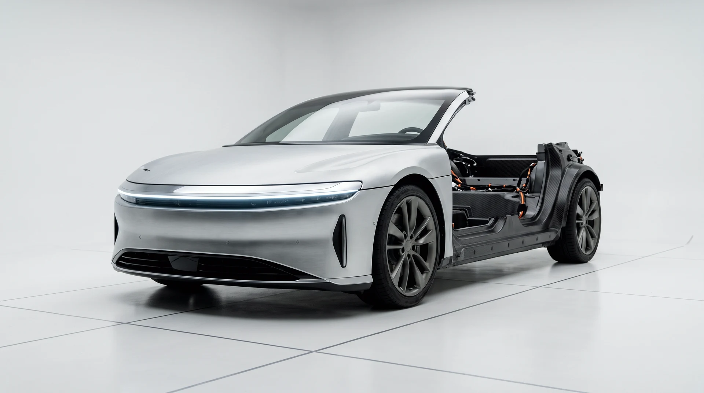
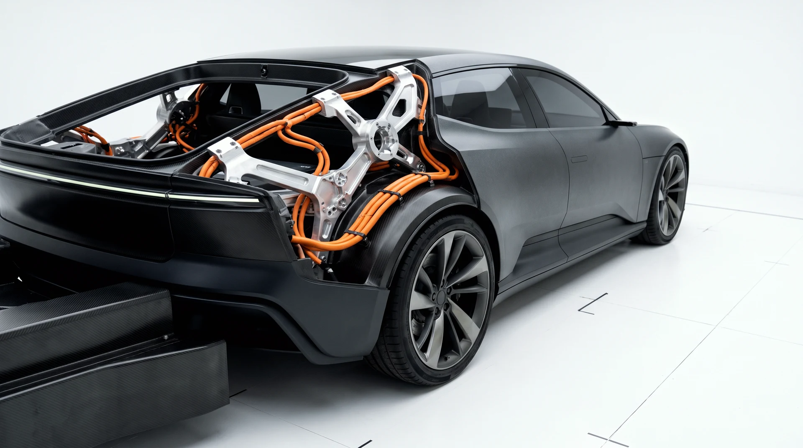

SC-05 · THE WORKS · WIND HALL · —
VARDE
The VARDE is shown the way it is built — half finished, half exposed — because the argument is the point: nine hundred volts, three motors, and a chassis we are prepared to be judged on before the paint goes anywhere near it.
01 · THE ARGUMENT
TRI-MOTOR · 900 V · CARBON TUB
Half machine.
Half confession.
Every marque says its future is close. The VARDE is what close actually looks like: a rolling laboratory that laps the Works' wind hall every week, sheds a component every month, and keeps precisely nothing behind a curtain. The orange lines are the high-voltage arteries. You are supposed to see them.
Its range is computed from the declared battery and consumption — no cycle theatre, no asterisk. Its limiter is declared and the aero speed it forgoes is printed anyway. When the production car comes, hold it to this sheet.
02 · UNDER LIGHT
DRAG THE GLARE ACROSS THE PAINT

LIGHT RIG · MANUAL
03 · ITS SECTOR
THE WORKS · ASSEMBLY · WIND HALL · NO CURTAINS
